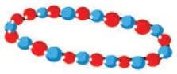

- Antony brushes his teeth in the morning and night on all days in a week. Shabeen brushes her teeth only in the morning. What is the ratio of the number of times they brush their teeth in a week?
- Thirumagal's mother wears a bracelet made of 35 red beads and class="fig side-fig">

30 blue beads. Thirumalgal wants to make smaller bracelets using the same two coloured beads in the same ratio. In how many different ways can she make the bracelets?- Team A wins 26 matches out of 52 matches. Team B wins three-fourth of 52 matches played. Which team has a better winning record?
- In a school excursion, 6 teachers and 12 students from 6th standard and 9 teachers and 27 students from 7th standard, 4 teachers and 16 students from 8th standard took part. Which class has the least teacher to student ratio?
- Fill the boxes using any set of suitable numbers 6 : : : : 15.
- From your school diary, write the ratio of the number of holidays to the number of working days in the current academic year.
- If the ratio of Green, Yellow and Black balls in a bag is 4 : 3 : 5, then
- Which is the most likely ball that you can choose from the bag?
- How many balls in total are there in the bag if you have 40 black balls in it?
- Find the number of green and yellow balls in the bag.